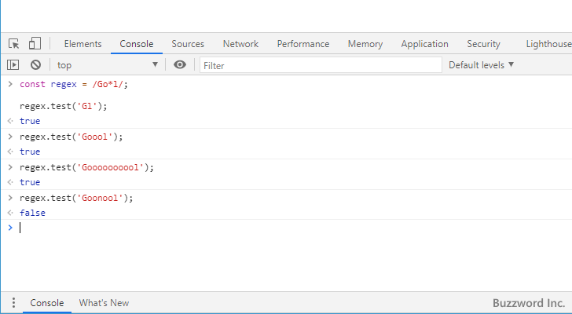
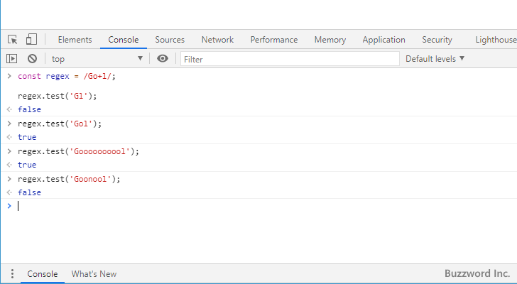

- Home ›
- 正規表現入門 ›
- 正規表現のメタ文字一覧
[量指定子]直前の文字の繰り返し：* + ? {num} {min, max}
正規表現で使用するメタ文字の一つであるアスタリスク(*)、プラス(+)、クエスチョンマーク(?)、{num}、そして {min, max} の使い方について解説します。それぞれ繰り返しを表現する時に使用されるメタ文字です。量指定子とも呼ばれます。
※ 正規表現で繰り返しのメタ文字を使用する場合は「正規表現における最大量指定子と最小量指定子の考え方」を一度参照されてください。
目次
直前の文字が0回以上連続する文字にマッチ:アスタリスク(*)
パターンの中でアスタリスク(*)が使われた場合、アスタリスク(*)の直前の文字が 0 回以上連続する文字にマッチします( 0 回以上というのは一度もなくてもいいし何回出てもいいという意味です)。例えば次のような正規表現のパターンで考えてみます。
Go*l
"G" 、 "o" が 0 回以上続く文字、 "l" 、と続くパターンとなります。このパターンとマッチする文字列は例えば次のようなものになります。
〇 Gl 〇 Gol 〇 Goool 〇 Goooooooool ✕ Goonool
アスタリスク(*)の直前の文字である "o" が一回も現れなくてもマッチします。
サンプル
JavaScript を使って簡単な正規表現のサンプルを作成してみます。
const regex = /Go*l/;
regex.test('Gl');
--> true
regex.test('Goool');
--> true
regex.test('Goooooooool');
--> true
regex.test('Goonool');
--> false

直前の文字が1回以上連続する文字にマッチ:プラス(+)
パターンの中でプラス(+)が使われた場合、プラス(+)の直前の文字が 1 回以上連続する文字にマッチします。例えば次のような正規表現のパターンで考えてみます。
Go+l
"G" 、 "o" が 1 回以上続く文字、 "l" 、と続くパターンとなります。このパターンとマッチする文字列は例えば次のようなものになります。
〇 Gol 〇 Goool 〇 Goooooooool ✕ Gl ✕ Goonool
プラス(+)の直前の文字である "o" が一回も現れない場合はマッチしません。
サンプル
JavaScript を使って簡単な正規表現のサンプルを作成してみます。
const regex = /Go+l/;
regex.test('Gl');
--> false
regex.test('Gol');
--> true
regex.test('Goooooooool');
--> true
regex.test('Goonool');
--> false

直前の文字が0回または1回現れる文字にマッチ：クエスチョンマーク(?)
パターンの中でクエスチョンマーク(?)が使われた場合、クエスチョンマーク(?)の直前の文字が 0 回または 1 回現れる文字にマッチします。例えば次のような正規表現のパターンで考えてみます。
Go?l
"G" 、 "o" が 0 回または 1 回続く文字、 "l" 、と続くパターンとなります。このパターンとマッチする文字列は例えば次のようなものになります。
〇 Gl 〇 Gol ✕ Goool ✕ Goooooooool ✕ Goonool
クエスチョンマーク(?)の直前の文字である "o" は 0 回または 1 回だけ現れる場合にマッチします。
サンプル
JavaScript を使って簡単な正規表現のサンプルを作成してみます。
const regex = /Go?l/;
regex.test('Gl');
--> true
regex.test('Gol');
--> true
regex.test('Gool');
--> true
regex.test('Goonool');
--> false
直前の文字をnum回繰り返す文字にマッチする：{num}
パターンの中で {num} が使われた場合、直前の文字を num 回繰り返す文字にマッチします。例えば次のような正規表現のパターンで考えてみます。
Go{4}l
"G" 、 "o" の文字が 4 回連続で続く文字、 "l" 、と続くパターンとなります。このパターンとマッチする文字列は例えば次のようなものになります。
〇 Gooool ✕ Gl ✕ Gool ✕ Goooooooool
"o" が 4 回続く場合だけマッチします。
サンプル
JavaScript を使って簡単な正規表現のサンプルを作成してみます。
const regex = /Go{4}l/;
regex.test('Gl');
--> false
regex.test('Gool');
--> false
regex.test('Gooool');
--> true
regex.test('Goonoool');
--> false
直前の文字をmin回以上max回以下繰り返す文字にマッチする：{min,max}
パターンの中で {min,max} が使われた場合、直前の文字を min 回以上 max 回以下繰り返す文字にマッチします。どちらかだけを指定することもできます。
{min,} 直前の文字を min 回以上繰り返す
{,max} 直前の文字を max 回以下繰り返す
{min,max} 直前の文字を min 回以上 max 回以下繰り返す
例えば次のような正規表現のパターンで考えてみます。
Go{2,4}l
"G" 、 "o" の文字が 2 回以上 4 回以下の回数連続で続く文字、 "l" 、と続くパターンとなります。このパターンとマッチする文字列は例えば次のようなものになります。
〇 Gool 〇 Goool 〇 Gooool ✕ Gl ✕ Gol ✕ Goooool
"o" が 2 回以上 4 回以下続く場合だけマッチします。
サンプル
JavaScript を使って簡単な正規表現のサンプルを作成してみます。
const regex = /Go{2,4}l/;
regex.test('Gl');
--> false
regex.test('Gol');
--> false
regex.test('Gool');
--> true
regex.test('Gooool');
--> true
regex.test('Goooool');
--> false
-- --
正規表現で使用するメタ文字の一つであるアスタリスク(*)、プラス(+)、クエスチョンマーク(?)、{num}、そして {min, max} の使い方について解説しました。
( Written by Tatsuo Ikura )

著者 / TATSUO IKURA
初心者～中級者の方を対象としたプログラミング方法や開発環境の構築の解説を行うサイトの運営を行っています。